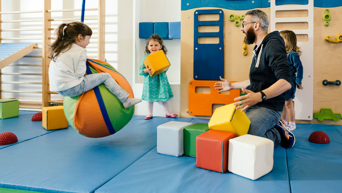
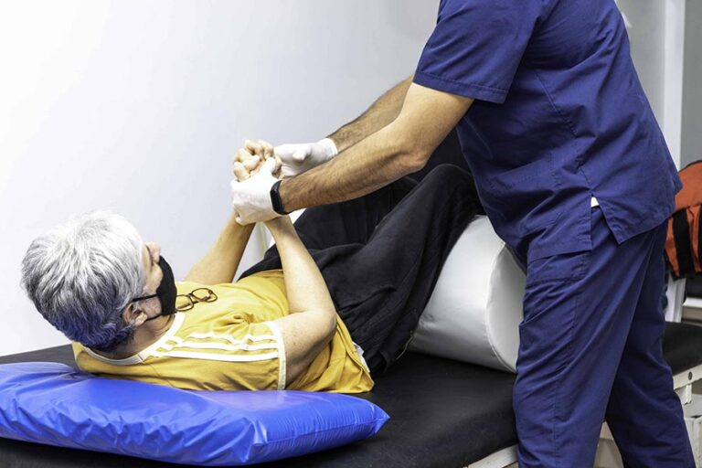
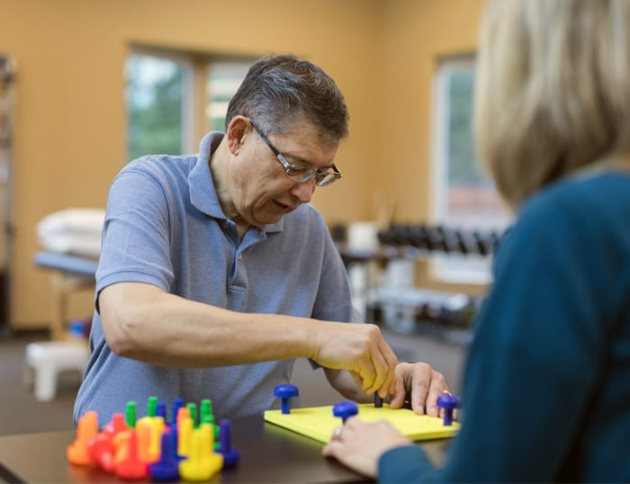

Orientada a rescatar la subjetividad del paciente con discapacidad frecuentemente
arrasada por fenómenos de desvitalización y sobreadaptación; con el objeto de brindar
la posibilidad de despliegue de su potencial no comprometido por el déficit orgánico,
para lograr el grado más alto de autonomía posible.
Psicopedagogía:
Se interviene desde la práctica para diagnosticar y tratar los trastornos en aprendizajes
escolares y cotidianos. Asimismo se articulan estrategias con las distintas ofertas del sistema
educativo para lograr el mayor grado posible de capacitación al que puede acceder el paciente.
Fonoaudiología:
Se favorece la estructuración del lenguaje como medio para la comprensión y expresión. Se trabaja para rehabilitar las funciones respiratorias y articulatorias. Se promueve la inserción social a través de la comunicación.

Psicomotricidad:
Se interviene desde la práctica para diagnosticar y tratar los trastornos en aprendizajes
escolares y cotidianos. Asimismo se articulan estrategias con las distintas ofertas del sistema
educativo para lograr el mayor grado posible de capacitación al que puede acceder el paciente.

Kinesiologia:
Se interviene desde la práctica para diagnosticar y tratar los trastornos en aprendizajes
escolares y cotidianos. Asimismo se articulan estrategias con las distintas ofertas del sistema
educativo para lograr el mayor grado posible de capacitación al que puede acceder el paciente.

Terapia ocupacional:
Se interviene desde la práctica para diagnosticar y tratar los trastornos en aprendizajes
escolares y cotidianos. Asimismo se articulan estrategias con las distintas ofertas del sistema
educativo para lograr el mayor grado posible de capacitación al que puede acceder el paciente.